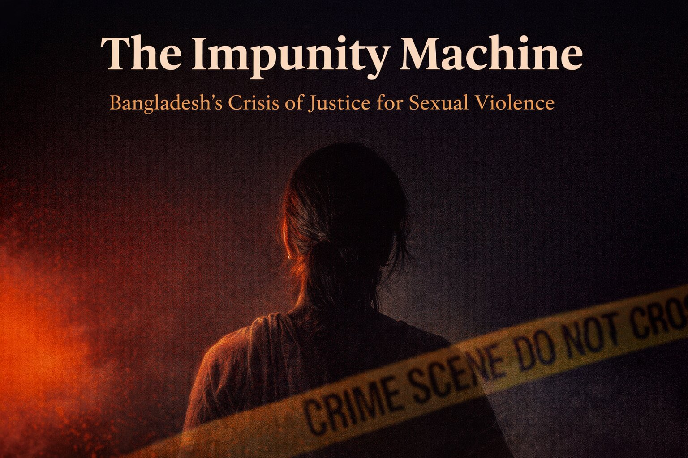

She is somewhere in Bangladesh right now.
She is in her twenties. She lives in Barishal Division — where 81.5 percent of women will experience violence in their lifetimes, the highest rate in the country. Something happened to her three weeks ago. She has not washed the memory away. She has not told her mother. Not her sister. Not a doctor. Not a single person in the world knows what happened to her.
This is not weakness. Read that again: this is not weakness. She has done a precise calculation — the kind of calculation every woman in her position does — and she has concluded, correctly, that speaking will cost her more than silence. Her reputation. Her marriage prospects. Her family's honour, which in Bangladesh is stored in her body. The risk of being blamed. The risk of a shalish — a village tribunal of men — deciding that a settlement with her attacker is better than a trial. The risk of being the one who ends up in prison.
She is one of roughly 300,000 women estimated to experience non-partner sexual violence in Bangladesh each year. (UNFPA/BBS VAW Survey 2024 · S-02, S-37 · PROBABLE) In Bangladesh, 62 to 64 percent of women who experience sexual violence tell no one at all. Not one person. That silence is the first verdict the system delivers — before any court has heard a word.
Imagine all 66,711 of those women in a room. Imagine what it cost each of them to walk through the door of a crisis centre — the shame they overcame, the family pressure they resisted, the fear they swallowed. Now imagine telling 66,401 of them: nothing will happen to the man who hurt you. That is not a failure. That is the system working as it works.
In the first seven months of 2024 alone, 643 women sought help at Bangladesh's crisis centres. 227 cases were filed. Twelve verdicts were delivered. Zero convictions. Not one. In seven months. The system processed them and returned them to silence.
She has not filed a case yet. She may never file one. She is part of the 64 percent who stay silent — and on the evidence of the past two decades, that silence may be the most rational decision available to her.
This report documents why.
This investigation is live. New leads are collected automatically every six hours from major Bangladesh news sources. Every item carries an evidence tier label. Every source is named. Nothing is published here without a confirmed primary source.
How sexual violence cases move — or fail to move — from incident to conviction. The two documented data gaps are not analytical limitations. They are accountability failures.
On March 5–6, 2025, an eight-year-old girl (Achia) was raped and killed in Magura District. The case triggered nationwide protests and a High Court directive. The accused (Hitu Sheikh, 50) confessed on March 15 under Section 164. Charge sheet: April 13. Verdict: May 17 — death sentence. 71 days from assault to verdict. Three co-accused acquitted for insufficient evidence. March 2026 update: Death reference reached the High Court May 21, 2025. Appeal admitted July 1, 2025 (Justice Mostafizur Rahman and Justice Sagir Hossain). Fine of BDT 100,000 stayed pending review. As of March 2026: appeal under active review. Normal WCRPA timeline: 2,349 days. The system is not incapable of speed. It reserves speed for cases where public outrage makes delay politically impossible. For the remaining ~149,999 cases in the queue: no outrage, no urgency.
Her case entered the funnel the day she decided to speak. She found the One-Stop Crisis Centre after two days of searching, in a city she had to travel to. A counselor held her hand. A doctor examined her. A case was filed.
She is now a number. Case number 227 of 643 in the first seven months of 2024. She does not know that, of the 12 verdicts delivered that year, zero ended in conviction. She does not know that her case will sit in a tribunal queue for an average of 2,349 days. She does not know yet what the system does to women who wait.
Adjust the three variables that drive the compound probability. Every assumption is labeled with its source. The default loads the mid-scenario reference.
Bangladesh has 99 Women and Children Repression Prevention Tribunals across all 64 districts. Bangladesh has full One-Stop Crisis Centres (OCC) in 14 medical college hospitals. The gap between where cases can be filed and where survivors can be supported is visible below.
Dhaka, Rajshahi, Chattogram, Sylhet, Barishal, Khulna, Rangpur, Faridpur, Cox's Bazar, Pabna, Bogura, Cumilla + 2 additional. Source: MSPVAW government programme data (updated from 9 to 14). 67 crisis cells at district/upazila level provide limited services.
Approximately 50 of 64 districts have no full OCC. Survivors in these districts face a 3–4 month DNA testing wait (2 national machines), no on-site forensic physician, no shelter, and a 78% rate of missing the 72-hour forensic evidence window. Tribunal exists — but the case cannot be built.
Between 2001 and July 2024, 66,711 women and children sought support at Bangladesh's 14 OCCs. Only 20,914 cases were filed (31%). Of those, verdicts were delivered in 2,392 cases. Of those, the accused were sentenced in 310 cases — roughly 1.48% of filed cases, 0.46% of women who came forward. In the first seven months of 2024: 643 victims, 227 cases, 12 verdicts, zero convictions. Source: Daily Star, November 2, 2024. CONFIRMED · S-55
The annual WCRPA conviction rate is not published by Police Headquarters, the Ministry of Law, or the Ministry of Women and Children Affairs. That absence is itself a documented finding. Five independent measures exist.
Five independent sources using different methodologies, time periods, and geographic scopes all place the WCRPA conviction rate below 4%. The convergence of sources with no access to each other's data strengthens this finding significantly.
| Source | Rate | N / D | Period | Status |
|---|---|---|---|---|
| Naripokkho (2018) · S-06 | 0.39% | 19 / 4,372 rape cases | 2011–2018 · 6 districts | CONFIRMED |
| BRAC / Agile Consultants (2022) · S-01 | 3.66% | 36 / 984 accused | Jan 2021–Sep 2022 · 16 districts | CONFIRMED |
| HRW (2021) · S-04 | <1% | OCC / MSPVAW data | Pre-2021 · national | CONFIRMED |
| UK Home Office CPIN (2024) · S-16 | <3% | PHQ via Kaler Kantho | 2016–2022 · national | CONFIRMED |
| OCC Programme Data (2024) · S-55 | 1.48% of cases / 0.46% of visitors | 310 / 20,914 filed / 66,711 visitors | 2001–Jul 2024 · 14 centres | CONFIRMED |
| Year | Rape Cases Filed | Source | Tier |
|---|---|---|---|
| 2019 | 6,766 | PHQ via Kaler Kantho · S-16 (includes Section 9(4) attempt to rape) | CONFIRMED |
| 2020 | 6,220 | PHQ via Kaler Kantho · S-16 | CONFIRMED |
| 2021 | 6,341 | PHQ via University of Asia Pacific study + Prothom Alo Jul 2025 · S-61 | PROBABLE — 2 sources, both cite PHQ; not primary doc |
| 2022 | 4,762 | PHQ via ResearchGate study · S-62 (25% drop — explained by DNA lab crisis + judicial deterrent) | PROBABLE — single academic source |
| 2023 | 5,191 | PHQ · TBS 2024 · S-56 | CONFIRMED |
| 2024 | 4,394 | PHQ · Daily Star Mar 2025 · S-57 = 13/day avg | CONFIRMED |
| Aug 2024–Jan 2025 | 8,307 (6-month total post-revolution surge) | Prothom Alo crime analysis · S-65 | PROBABLE — single source |
| Jan–Feb 2025 | 832 | Prothom Alo crime analysis · S-65 | PROBABLE — single source |
| 2021–2022 annual PHQ | METHODOLOGICAL NOTE: PHQ's Figure A (total WCRPA) differs from Figure B (reproductive health studies, completed rape only). The figures above use Figure A (PHQ total including Section 9(4) attempts). The ~25% drop in 2022 is explained by three documented causes: (1) DNA lab manpower crisis May 2022 — 54 staff unpaid across 8 labs, stalling evidence processing; (2) Raintree Hotel judge's "72-hour rule" statement Nov 2021 deterring late reporting; (3) death penalty paradox suppressing reporting of domestic perpetrators. | PROBABLE | |
The 99 tribunals were established for speedy trial. Section 20(3) mandates 180 days. The law exists. The enforcement mechanism does not. Each day adds 13 new cases. The queue never gets shorter.
Delay is not a neutral inconvenience. It is a mechanism of acquittal. Over 2,349 days: witnesses relocate or forget details; forensic evidence degrades beyond usefulness; economic pressure on the survivor's family becomes unbearable; shalish threats intensify as trial approaches. The Islam & Islam (2003) forensic study (S-50) directly links delayed forensic attendance — often caused by initial shalish attempts — to negative forensic opinions in 248 cases.
It has been two years. She is still waiting for her trial date. Her mother no longer speaks to her about the case. The man she accused lives in the same district. He has remarried. She has not.
The 180-day statutory deadline passed 540 days ago. No court has flagged the violation. No institution has measured it. She does not know that the law requires her trial to have been completed nearly two years ago. She only knows that she is still waiting, and that waiting is its own kind of verdict.
In March 2022, Runa Akhter filed a rape complaint in Cox's Bazar. The accused were jailed. The case was later proved false and the accused acquitted. On February 16, 2023 — less than six weeks after one of the accused filed a Section 17 counter-complaint — Runa was arrested from her home on court order. On April 13, 2023 — less than eight weeks later — she was sentenced to five years imprisonment and fined Tk 20,000. The entire proceeding from counter-complaint to verdict: approximately seven weeks. The average WCRPA trial for genuine survivors: 2,349 days. The machine runs fastest when it runs against the woman who tried to use it. Source: Prothom Alo, April 13, 2023 (S-14).
These are not implementation failures. They are documented features of the legal architecture that actively drive acquittals, create barriers to conviction, and expose survivors to retaliation.
In October 2020, the government amended WCRPA via ordinance to authorize the death penalty for rape. The amendment followed mass protests. It produced outcomes inconsistent with its stated intent.
The WCRPA 2000 rape definition is among the narrowest in the region.
| Excluded Category | Statutory Basis | CEDAW / Regional Status |
|---|---|---|
| Marital rape | WCRPA s.9 exempts husband-wife intercourse (unless wife under 16) | CEDAW 2016 para 19(a) explicitly recommended criminalization. Nepal: criminalized 2017. India: partial recognition 2022. CONFIRMED · S-41, S-42 |
| Object-based assault | Non-penile penetration not covered | Not addressed in any regional comparator listed |
| Male/transgender victims | Definition gendered — does not recognize male/trans rape under this Act | 2013 UN study: 2,374 men reported same-sex rape in Bangladesh |
Section 17 was designed to deter false complaints. In documented practice, it functions as a mechanism through which accused persons pursue criminal charges against original survivors after acquittal.
Runa Akhter sentenced to five years. The Section 17 proceeding took 7 weeks. The average genuine rape trial: 2,349 days.
Five people charged including the original plaintiff for a fabricated attempted-rape complaint.
The shalish — informal arbitration by village elders — remains the primary dispute resolution mechanism for rape in rural Bangladesh. Despite the High Court's 2020 directive ordering police to stop recognizing shalish settlements in rape cases, the practice continues.
Islam & Islam (2003) forensic study (S-50): in 248 cases, negative forensic opinions due to delayed attendance — frequently caused by initial shalish settlement attempts. Shalish destroys evidence before the formal system even knows the case exists.
No district-level breakdown of WCRPA conviction rates exists from any official source. The geographic data below covers prevalence (not outcomes). Source: BBS/UNFPA VAW Survey 2024 (27,476 women, 95.4% response rate). CONFIRMED · S-02
| Division | Lifetime IPV | Past 12 Months | Level |
|---|---|---|---|
| Barishal | 81.5% | 57.3% | Highest |
| Khulna | 81.3% | 51.9% | Highest |
| Chattogram | 78.5% | 53.2% | High |
| Mymensingh | 75.1% | 48.1% | Elevated |
| Rajshahi | 74.5% | 41.1% | Elevated |
| Dhaka | 72.9% | 44.5% | Elevated |
| Sylhet | 72.7% | 50.0% | Elevated |
| National | 75.9% | 48.7% | — |
Women in disaster-prone areas: lifetime IPV 81% vs 68% in non-disaster areas. Environmental vulnerability acts as a documented multiplier through displacement, economic stress, and collapse of community oversight.
Infrastructure failures compound legal failures. Access to forensic, medical, and legal services determines whether a case can be built — before it ever reaches a tribunal.
| Element | Current Status | Gap | Status |
|---|---|---|---|
| Full OCCs (DNA + legal + medical) | 14 medical college hospitals | ~50 districts without full OCC | CONFIRMED · S-55 |
| Crisis Cells (limited services) | 67 at district/upazila hospitals | 20 upazila-level only | CONFIRMED · S-09 |
| OCC visitors → convictions | 310 of 66,711 (0.46%) | 99.54% received no conviction | CONFIRMED · S-55 |
| Helpline 109 | 7.16M total calls; 12% of women aware | 88% unaware | CONFIRMED · S-09 |
| 72-hour forensic window | Only 22% of survivors reach forensic dept within 72hrs | 78% outside evidence window | PROBABLE · S-01 |
| DNA capacity | 2 national machines. 3–4 months per test. | 789 cases stalled (Sep 2025) | CONFIRMED · S-01, S-22 |
| Avg charge framing time | ~23 months from filing | — | CONFIRMED · S-01 |
| BLAST legal aid | 25 of 64 districts | 39 districts uncovered | CONFIRMED · S-18 |
| Witness Protection Law | Does not exist | All 64 districts | CONFIRMED ABSENT |
These conviction rates use different denominators. Direct comparison is methodologically invalid. They provide structural context only — and the context is damning regardless of how the numbers are measured.
India's published conviction rate is 22.7% (NCRB 2023) — often cited as evidence that a South Asian system can achieve meaningful accountability. That number is a denominator illusion. It measures only completed trials, ignoring 203,067 pending rape cases at end-2023. If India's rate were recalculated on Bangladesh's denominator — convictions against total reported cases — the figure drops to approximately 2–3%. India and Bangladesh are structurally identical in their inability to dispose of sexual violence cases. The published difference is a measurement artefact, not a justice reality. PROBABLE — recalculation based on NCRB data · S-38
| Country | Published Rate | Denominator | Attrition Reality | Source |
|---|---|---|---|---|
| Bangladesh | 0.39%–3.66% | Disposed tribunal cases | ~1.46% of assaults reach FIR. 0.46% of OCC visitors get conviction. | S-06, S-01, S-55 · CONFIRMED |
| India (NCRB 2023) | 22.7% (→ ~2–3% recalc.) | Trials completed only (18,517) | 203,067 cases pending end-2023. 90.66% of rape trials still pending. | S-38 · CONFIRMED |
| Pakistan | < 3.0% | Reported cases | Witness intimidation; shalish equivalents; no forensic infrastructure parity. | HRW 2024 · CONFIRMED |
| Japan | 1.0–2.0% | Estimated actual rapes | Marital rape criminalized only 2023. Extreme under-reporting. Only ~1,500 formal cases annually vs est. 150,000+ incidents. | Cambridge IJAS 2022 · PROBABLE |
| UK (CPS 2023) | 63.5% | Prosecutions commenced (2,283) | Only 2.6% of police-recorded rapes result in charge. On Bangladesh's denominator: likely <5%. | S-39 · CONFIRMED |
| USA | ~21.5% | Victims who reported to police | Only 20–25% of assaults reported. True impunity rate closer to 80–85%. | NCVS/BJS 2021 · PROBABLE |
| South Africa (NPA 2023/24) | 77.5% | Verdict cases only | 53,888 reported vs 8,621 prosecuted; TCC model: 78% conv rate. Integration is the variable. | S-40 · CONFIRMED |
Of 40+ countries examined in this investigation, only 9 have published conviction rate data attributable to a named source. 31 countries returned no usable figure. That absence is the global finding: the world does not measure rape accountability, and what it does not measure, it cannot be held responsible for.
The 2020 death penalty amendment was presented as deterrence. The academic literature is unambiguous. The South Asian data is unambiguous. The Bangladesh data since 2020 is unambiguous. Severity without certainty does not deter. It makes things worse.
Classical deterrence theory holds that crime is deterred by certainty (probability of being caught), severity (harshness of punishment), and celerity (swiftness). Academic consensus: certainty is the dominant factor. Severity has limited additional effect once certainty is established — and no significant effect when certainty is near zero. Bangladesh has maximum severity (death penalty) and near-zero certainty (0.39–3.66% conviction rate). This is the worst possible combination — and the evidence shows it produces a specific, predictable set of harms.
Bangladesh has no Witness Protection Law. BRAC 2022 and HRW 2020 both identify witness intimidation as a primary driver of case collapse. Every regional comparator has enacted one. None has published proof it worked.
| Country | Legislation | Year | Outcomes Published? |
|---|---|---|---|
| Bangladesh | None enacted | — | ■ ABSENT |
| India | Witness Protection Scheme 2018 — Mahender Chawla v UoI (S-43) | 2018 | Unverified — no NCRB uptick in conviction rates post-2018 PROBABLE |
| Sri Lanka | Assistance to Victims and Witnesses Act No. 4 of 2015 | 2015 | Implementation hindered by capacity issues. No outcome data. PROBABLE |
| Pakistan | Sindh WP Act 2013; Federal WP Act 2017 | 2013/17 | Not published. PROBABLE |
No South Asian country with post-2010 witness protection legislation has published quantified outcome data showing improved conviction rates for sexual violence. The gap between legislation and implementation is itself a regional pattern — and a cautionary note for advocacy. Enacting the law is necessary but not sufficient without resource allocation, judicial training, and enforcement mechanisms.
Each intervention is paired with its evidence base and documented structural barrier. Political feasibility is outside this investigation's scope.
PHQ holds this data. A single policy decision would make it public. UK MOJ and India NCRB publish comparable data by offence and state. The absence is a choice. CONFIRMED absent · CONFIRMED solvable
Law Commission draft bill exists. Not enacted. India (2018), Sri Lanka (2015) have enacted comparable laws. Bangladesh is the regional outlier. Legislation alone insufficient without enforcement budget and judicial training. CONFIRMED need · S-43, S-44
Expert consensus (HRW, Amnesty, OHCHR) that mandatory capital punishment raises conviction threshold without improving deterrence. Dölling et al. (2009) confirms. Bailey (1977): certainty more effective than severity. Political cost: "going soft on rape" framing. PROBABLE effect · Political barrier HIGH
180-day rule existed in statute. Compliance rate: effectively zero. No enforcement mechanism. March 2025 update: The 2025 WCRPA Amendment Ordinance reduces the trial mandate to 90 days and explicitly classifies failure to meet deadlines due to official negligence as "inefficiency and misconduct" triggering mandatory disciplinary proceedings. This is the first enforcement mechanism ever attached to the timeline rule. Whether it will be implemented or remain on paper is the next question. Source: bdlaws.minlaw.gov.bd; BSS Mar 2025 (S-21, S-68). CONFIRMED partial progress · Political barrier MEDIUM (now reduced)
2 national DNA machines serve the entire country. 789 cases stalled (S-22). As of early 2025: 1,204 of 1,304 DNA samples unprocessed (92%). Only 22% reach forensic dept within 72-hour window. March 2025 update: The 2025 Ordinance now allows tribunals to proceed to trial without a DNA report if medical and circumstantial evidence is sufficient — directly addressing the DNA bottleneck. This is a significant reform. It does not replace the need for expanded forensic infrastructure, but removes the DNA report as an absolute barrier to trial. Source: BSS, bdlaws.minlaw.gov.bd (S-21, S-68). South Africa's TCC model (78% conviction rate vs Bangladesh's 0.46%) remains the strongest evidence that forensic access determines outcomes. CONFIRMED need · CONFIRMED partial reform · CONFIRMED comparator · S-40, S-55
CEDAW 2016 para 19(a) explicitly required this (S-41). Nepal criminalized marital rape 2017 (S-42). Bangladesh retains marital exemption. 75.9% of women experience lifetime IPV — most perpetrated by a spouse. The current definition renders majority of sexual violence legally invisible. CONFIRMED gap · International obligation
No institution currently tracks Section 17 prosecutions nationally. Two confirmed cases documented. National scale unknown. Mandatory tracking would quantify the chilling effect on reporting — prerequisite for any evidence-based reform. CONFIRMED absent · CONFIRMED actionable
The 2025 WCRPA Amendment Ordinance expanded the grounds for Section 17 counter-prosecution from "provably false allegations" to include "loss of dignity or reputation" (মর্যাদাহানি). Legal scholars have flagged this as a risk: it could allow accused defendants — particularly those with resources — to file counter-charges on weaker grounds, intensifying the chilling effect already documented on genuine survivors. This reform contains a documented contradiction: it reduces procedural barriers to trial while expanding barriers to reporting. This investigation will track whether the expanded Section 17 provisions correlate with an increase in counter-charges. Source: bdlaws.minlaw.gov.bd (S-68); LawyersClubBangladesh 2025 analysis. PROBABLE risk · monitoring required
Each absence is an accountability failure. If a system cannot be measured, it cannot be held responsible for what it loses. This is true in Bangladesh. It is also true globally.
Of 40+ countries examined in this investigation, 31 have no published conviction rate for rape attributable to any named official source. This includes Nigeria, Ethiopia, Egypt, Iran, Morocco, Brazil, Mexico, Turkey, China, Russia, Australia, Canada, Germany, Sweden, South Korea, and more. The inability to measure rape accountability at a national level is not a data collection failure. It is a policy posture. Governments that do not measure impunity have decided they do not need to be accountable for it. Bangladesh fits within a global pattern of deliberate statistical blindness.
The woman in Barishal. She filed her case. She waited. The 180-day statutory deadline passed and no court flagged it. A witness moved to Dhaka. Her forensic evidence, collected 11 days after the assault — well outside the 72-hour window because no full OCC existed in her district — returned an inconclusive DNA result after a four-month wait. Her accused's lawyer filed for continuance. Her family asked her, quietly, to stop. The shalish had offered a settlement twice. She had refused both times.
She is, statistically, in the 98.54% of women who come forward to a crisis centre and leave without a conviction. She did everything the system asked of her. The system did not do what she asked of it.
This is not a chain of accidents. Every link is documented. Every failure point has a name, a source, and a tier label. The silence is documented. The shalish is documented. The forensic window failure is documented. The delay is documented. The acquittal is documented. The only thing that is not documented is the government's plan to change any of it.
This investigation's central finding is not that Bangladesh fails its rape survivors. It is that the system produces a specific outcome — impunity — through a chain of predictable, structural choices. The death penalty was introduced and conviction rates did not rise. The 99 tribunals were established and cases took longer, not shorter. The OCCs were built and 99.54% of the women who walked through their doors left without justice. Each of these outcomes was foreseeable. None was unintended.
In March 2025, the interim government enacted the WCRPA Amendment Ordinance — reducing the trial mandate to 90 days, removing DNA evidence as a mandatory prerequisite for trial, and attaching a disciplinary mechanism to timeline violations for the first time in the law's history. These are genuine reforms, not rhetorical ones. Whether they survive political transition and whether the 101 tribunals receive the staffing and resources to implement them — these are the questions that will determine their effect. The Magura exception proved the system can move fast when forced to. The question is whether the 2025 Ordinance forces it to move fast for all 150,000 pending cases, or only for the ones that generate headlines.
In July 2025, the High Court admitted the appeal of Hitu Sheikh — the man sentenced to death in the Magura case — and stayed the fine pending review. The High Court will now determine whether 21 days of "continuous hearing" satisfied the constitutional right to a fair trial. Whatever the outcome, the question has been put to the institution: can speed and justice coexist? Bangladesh's answer to that question will tell us whether the 2025 reforms are a genuine transformation or a pressure-release valve for public anger.
The Magura exception — 71 days from assault to death sentence when public outrage demanded it — proves the system is capable of speed. The Runa Akhter inversion — 7 weeks to convict the woman who filed the case — proves the system is capable of conviction. It reserves both for moments when power, not justice, demands them.
She withdrew her case on a Tuesday. She told no one. She came home, sat with her mother, and did not explain. There was nothing to explain. She had tried the system the system had built for her. The system had done what the data said it would do.
She is not a failure of courage. She is a documented output. And there are 300,000 more like her this year alone — most of whom will never even reach the door of a crisis centre, because they already know what waits on the other side.
The machine runs. The numbers accumulate. The silence continues. And somewhere in Bangladesh, right now, another woman is doing the calculation.
Constructed from named public records. Four AI research tools used as structured research assistants. All outputs cross-referenced against primary sources. No claim from unnamed sources. AI tools listed as Tier E where used — always flagged. Primary BRAC document verified directly.
Tier A: Primary official (PHQ, UNFPA, GoB). Tier B: Primary NGO (BRAC, ASK, HRW). Tier C: Major media (Daily Star, TBS, Prothom Alo). Tier D: Academic. Tier E: AI compilation (named source required).
All percentages include N, D, and source. Ranges preserved as ranges. Conflicting figures from different sources both presented with tier labels. Derived calculations state all inputs. Probability Index: 12 scenarios, not a single figure.
The opening narrative is a documented composite based exclusively on confirmed statistics. No individual's identity is assumed or implied. All statistics in the narrative are sourced in this report. Composite approach is standard in data journalism (ProPublica, NYT) and is disclosed in the editorial note.
During research, AI tools returned four papers purportedly on WCRPA tribunals. All four were about the International Crimes Tribunal (1971 war crimes) — a completely different institution. All four excluded. This disclosure is evidence of the research integrity process.
v1.0: Initial framework. v1.1: Corrected conviction rate methodology; removed 3 unsourced figures. v1.2: 18 new sources (S-34–S-54); BRAC S-01 CONFIRMED via primary document. v1.3: Narrative opening; interactive slider; Leaflet map; OCC upgraded to 14; new S-55 (66,711→310 OCC data); S-56, S-57 (PHQ daily rates). v1.4: Incidence citation; nav completed. v1.5: Full narrative rewrite (woman's perspective, composite survivor thread); thesis banner; conclusion section; India recalculation finding; 3 death penalty mechanisms; global data grid (40+ countries); data desert framing; upgraded BD map markers; human-scale translations; missing nav sections restored. v1.6: §10 live record added; automated collector live; cases.json and leads.json seeded. v2.0 (March 2026): Live Record moved to top of report; Monthly Record tab added; 2021 (6,341) and 2022 (4,762) annual filing data added (PROBABLE); post-Aug 2024 surge (8,307 in 6 months) added (PROBABLE); backlog upgraded to CONFIRMED (two independent sources); 101 tribunals confirmed; DNA backlog 92% figure added; Magura appeal status updated (HC admitted July 2025); 2025 WCRPA Amendment Ordinance documented; I-04 and I-05 updated with partial reform progress; I-08 (Section 17 expansion risk) added; new sources S-61–S-70; monthly.json introduced; conclusion updated with 2025 reform analysis. Data conflict (2019/2020 methodology discrepancy) resolved and documented.
| Tier | Minimum Threshold | Required Language | Must NOT Be Used For |
|---|---|---|---|
| CONFIRMED | ≥2 independent primary sources OR 1 official + corroboration OR court record | No qualifier required. Source attribution required. | Criminal guilt, intent, corporate ownership |
| PROBABLE | 1 primary source + corroborating pattern OR inference from 2+ CONFIRMED claims | "Available evidence suggests…" / "Records indicate…" | Headlines without qualification. Intent assertions. |
| CONFIRMED ABSENT | Active search by multiple independent research tools returns no source | Used only to document gaps in official record. | Supporting any other claim. |
Every claim corresponds to at least one source below. Tier labels are mandatory when citing specific claims.
BD-INV-002 is a structured compilation and analysis of publicly available records. It does not constitute legal proceedings, regulatory action, formal complaint, or adjudicative record. Open-source research and data journalism in the public interest.
Nothing in this report asserts individual criminal liability, judicial misconduct by named individuals, or institutional bad faith. Structural outcomes are documented as system-level findings.
Named parties may submit factual corrections at insightgaps@gmail.com. Corrections reviewed against source evidence and incorporated into subsequent versions with full documentation. All version changes logged publicly.
CC BY-NC 4.0. When citing a specific claim, the evidence tier label must be reproduced. Omitting the tier label misrepresents the certainty of the claim and violates citation requirements.